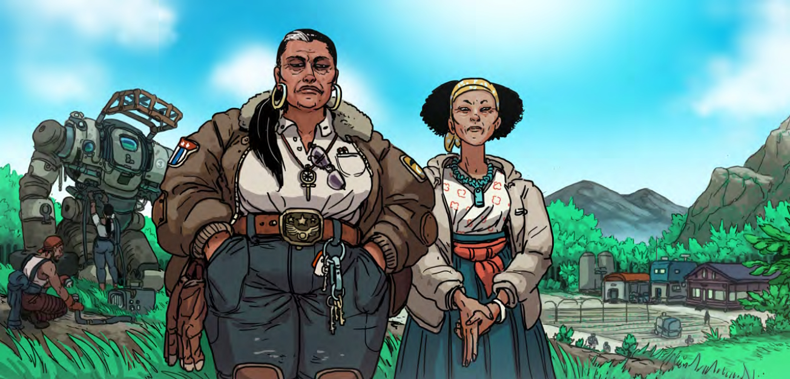

Liu Maize
Liu Maize is the second largest of the Gray Towns, and the furthest known community from Evergreen.
Liu Maize originated as a collective of homesteads bound together by an agreement of mutual aid and unconditional hospitality. At the time, those farms were affiliated with Evergreen, and the compact was a practical measure intended to assist in maintaining stability so far out from the burgeoning colony, which could provide little material support; over time, though, it's gradually formed into a collective of independent farms under a single name, bound together by what has evolved into a charter, legal document, and code of conduct all in one: the Compact.
Layout and Surroundings
Today, "Liu Maize" refers to both the collective itself as well as to the crossroads town that has sprung up roughly in the middle of the scattered farms, where the homesteaders gather and mingle. Evergreen's legal definition encompasses only the latter. It's largely built of prefabs acquired by the settlement from Evergreen surplus, but mixed-material buildings stand out here and there on the outskirts of wide dirt roads that make room for trucks and industrial mechs.
Liu Maize's population is very diffuse. The "town" itself is very small; you can walk from one end to the other in less than ten minutes. The vast bulk of the collective's population is concentrated in their homesteads, scattered throughout the nutrient-rich tracts of loamy soil that dominate this part of the valley.
Unlike Evergreen and Merricktown, farms in this part of Solo Terra are landlocked; their infrastructure can't rely on the large river that facilitates daily life for Hercynia's other settlers. Without running water to cool a fusion reactor, settlers rely on wind farms and lots of batteries in order to keep the lights on. The constant rain in this part of the continent means that solar power is unreliable, but it's also a boon: the municipal water supply is largely treated storm water, collected in massive barrels on the edge of the settlement and purified in a prefab treatment plant that rests at the town's heart to be distributed to whoever needs it.
Culture
Liu Maize values personal freedoms much more highly than Evergreen. Relations between the two settlements soured largely thanks to Landmark's strict control over colonists' schedules and livelihoods, and so the Compact makes an ideal out of the opposite. Every signee of Liu Maize is there by choice, and a member can withdraw themselves from the network at any time and for any reason. Resources are managed and distributed collectively; homesteads keep each other updated on what they have and share what they need to. This has run into some friction as more and more independent settlers join the cooperative, but for the time being it's managed to work itself out.
The collective is entirely subsistent on agriculture, supplemented by logging and light surface-level mining. Nearly half of the valley's comestibles flow through Liu Maize, and it's led to a thriving culinary scene. Visitors on official Landmark business tend to be met with a frosty reception — but friendly faces are met with a trademark warmth and hospitality that's often characterized by having more free food given to them than they know what to do with.
Locations
The Pagan Goddess
Built out of sturdy logs and sitting right near the center of Liu Maize's town, this bustling public house is one of the oldest buildings in the collective. As the town's one and only true gathering place, the Pagan Goddess (a shortening of its full name, "The Pagan Goddess of Swamps and Sticks") is packed nearly every hour of every day, and does double-duty as a town hall when it needs to. Lit by lanterns and typically backgrounded by local musicians, it carries an easy, homely atmosphere that nowhere else on Solo Terra can beat.
"The Pagan Goddess" is a nickname both for the establishment and its owner: a tall, tanned woman known only as Leshy. A former IPS-N Trunk Security officer with a decade-long track record in the Long Rim, she built the place, and she makes sure everyone knows it. Spent shells, burnt bulkheads, and wrecked mech parts line the walls as decorations, and nobody can miss the Shears: a crossed pair of vicious meters-longs blades torn from a pipecleaner subaltern and mounted above the double doors.
This establishment is mythologized in Evergreen for its house liquor. known simply as the 94. It's distilled from a native species of fruit and it has a tangy punch not unlike mango — alongside a blazing burn that educates first-time drinkers on why it has the name that it does.
Water Treatment Plant
Sequestered a stone's throw away from the Pagan Goddess, this water purification facility is the lifeblood of Liu Maize. Homesteads typically have their own water infrastructure, but everything and everyone in the town itself relies on the fresh, clean water that's treated here. It's technologically the most modern part of town, and one of the few places that's kept guarded at effectively all times; damage to the treatment plant means the whole cooperative suffers.
Châu Farm
 Maggie and Weiyi Châu
The Châus are a hardscrabble farming family with several homesteads around Liu Maize. Matriachs Maggie and Weiyi Châu arrived in Evergreen thirty years ago on a jury-rigged hauling skiff, and spent several years working construction jobs around the colony before their noncitizen status was discovered and they were expelled. They, perhaps predictably, have no desire to return.
The Châus sell produce to traders, militia, and colonists alike, and they distill for the Pagan Goddess. They've had ten children in the thirty years since striking out on their own, and taken as a whole, the extended family is central to Liu Maize's economy. The Compact recognizes no one member above another, but in practice the Châus are core to the collective; they know the land and people listen when they speak.
The family's largest homestead (the one most people know as "the Châus") is only a short trip away from town, and oversees rice paddies and cornfields that have become waterlogged in the monsoon season. Many of Liu Maize's workers make their living there.